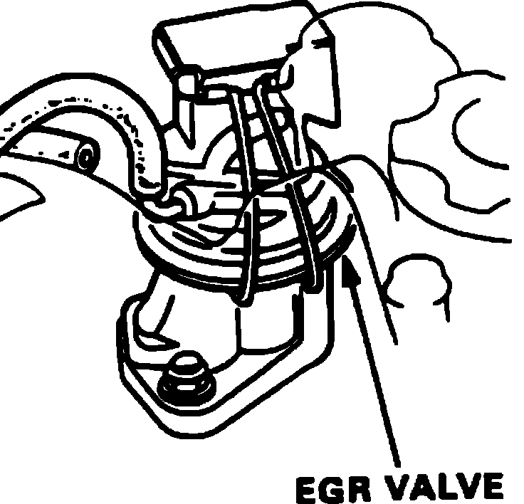

EGR Valve: Description and Operation
Exhaust Gas Recirculation Valve:

PURPOSE
The EGR Valve allows a measured amount of exhaust gas to be recycled into the intake flow.
LOCATION
On rear of right side cylinder head.
OPERATION
The valve has a diaphragm with a pintle rod attached to one side of it and a spring pushing on the other side of it (keeping the valve closed). When vacuum is applied to the diaphragm, it overcomes the spring pressure, pulling the pintle rod out of it's seat. This opens the passage, allowing gas recirculation. The amount of recirculation is directly relative to ported vacuum (throttle opening).